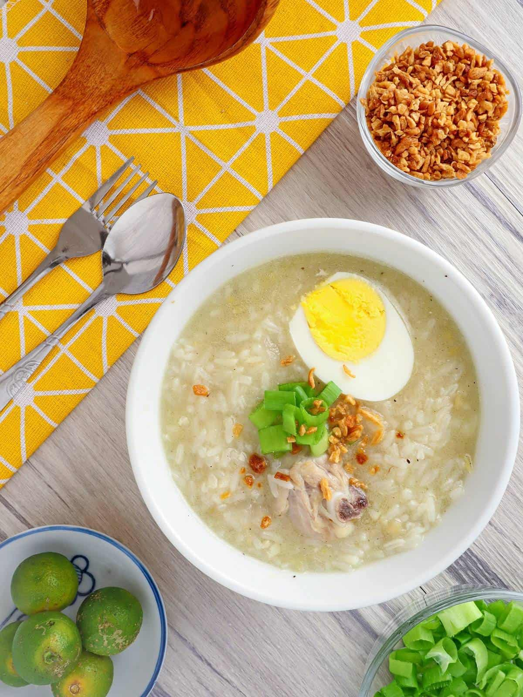

Arroz Caldo

Description
Arroz Caldo is a popular Filipino comfort food that is similar to a thick rice porridge.
It's usually made with chicken, ginger, garlic, and rice, and is often served with a variety
of toppings like chopped scallions, crispy fried garlic, and calamansi or lemon wedges. This
dish is perfect for a chilly day or whenever you're in the mood for something warm, hearty, and
delicious.
Ingredients
- 1 pound chicken thighs, cut into small pieces
- 1 cup uncooked rice
- 6 cups chicken broth
- 1 thumb-sized ginger, peeled and sliced
- 4 cloves garlic, minced
- 2 tablespoons vegetable oil
- 1 teaspoon fish sauce (optional)
- Salt and pepper to taste
- Toppings: chopped scallions, crispy fried garlic, calamansi or lemon wedges
Steps
- In a pot or Dutch oven, heat the vegetable oil over medium-high heat. Add the ginger and garlic and sauté for a minute or until fragrant.
- Add the chicken pieces and cook until lightly browned on all sides.
- Add the uncooked rice and stir to coat with the oil and chicken fat.
- Pour in the chicken broth and fish sauce (if using) and bring to a boil. Reduce heat to low and let simmer until the rice is cooked and the mixture thickens,
stirring occasionally to prevent sticking.
- Season with salt and pepper to taste.
- Serve hot with your choice of toppings like chopped scallions, crispy fried garlic, and calamansi or lemon wedges.